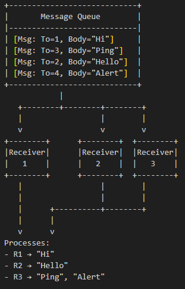

Parallel Computation
Parallel computation is an important concept that helps in achieving faster execution by performing multiple operations concurrently.
Parallel programming can be complex and requires careful handling of shared resources to avoid race conditions, deadlocks, and other concurrency-related bugs. It’s also worth noting that not every problem can be efficiently parallelized; the potential speedup from parallelization is largely determined by the proportion of the computation that can be performed concurrently, as described by Amdahl’s Law.
Libraries
The Boost libraries provide several tools that can help in writing parallel code:
-
Boost.Thread: Provides components for creating and managing threads, which can be used to perform multiple tasks concurrently on separate CPU cores.
-
Boost.Asio: While primarily a Networking library, this library also provides tools for asynchronous programming, which can be used to write concurrent code that performs multiple tasks at the same time without necessarily using multiple CPU cores.
-
Boost.Compute: This is a GPU/parallel computing library for C++ based on OpenCL. The library provides a high-level, STL-like API and is header-only and does not require any special build steps or linking.
-
Boost.Fiber: Allows you to write code that works with fibers, which are user-space threads that can be used to write concurrent code. This can be useful in situations where you have many tasks that need to run concurrently but are I/O-bound rather than CPU-bound.
-
Boost.Phoenix: A library for functional programming, it supports the ability to create inline functions which can be used for defining parallel algorithms.
-
Boost.Atomic: This library provides low-level atomic operations, with the aim of ensuring correct and efficient concurrent access to shared data without data races or other undesirable behavior.
-
Boost.Lockfree : Provides lock-free data structures which are useful in multi-threaded applications where you want to avoid locking overhead.
-
Boost.Chrono: Measures time intervals, which help control the timing of your app.
- Note
-
The code in this tutorial was written and tested using Microsoft Visual Studio (Visual C++ 2022, Console App project) with Boost version 1.88.0.
Parallel Computing Applications
Parallel computing has been successful in a wide range of applications, especially those involving large-scale computation or data processing. Here are some key areas where parallel computing has been particularly effective:
-
Scientific Computing and Real-Time Simulation: Many problems in physics, chemistry, biology, and engineering involve solving complex mathematical models, often represented as systems of differential equations. This includes simulations in fields like fluid dynamics, molecular dynamics, quantum mechanics, and climate modeling.
-
Data Analysis and Machine Learning: Training machine learning models, particularly deep neural networks, involves many similar computations (like matrix multiplications), which can be performed in parallel. Similarly, analyzing large datasets (as in big data applications) can often be parallelized.
-
Graphics and Gaming: Modern GPUs (Graphics Processing Units) are essentially parallel processors, capable of performing many computations simultaneously. This is particularly useful in graphics rendering, which involves applying the same operations to many pixels or vertices. Video games, 3D animation, and virtual reality all benefit from parallel computing.
-
High-Performance Database Engine and Data Warehouses: Many operations in databases, like searches, sorting, and joins, can be parallelized, leading to faster query times. This is particularly important in large-scale data warehouses.
-
Cryptocurrency Mining: Cryptocurrencies like Bitcoin require solving complex mathematical problems, a process known as mining. This process is inherently parallel and is typically performed on GPUs or dedicated ASICs (Application-Specific Integrated Circuits).
-
Genome Analysis and Bioinformatics: Tasks like genome sequencing, protein folding, and other bioinformatics tasks involve large amounts of data and can be greatly sped up using parallel computing.
-
Weather Forecasting and Climate Research: Simulating weather patterns and climate change requires processing vast amounts of data and performing complex calculations, tasks well-suited to parallel computation.
Multi-threaded Sample
The following code demonstrates using Boost.Thread to do the heavy lifting when you require a single foreground task, and multiple background tasks.
The sample has the following features:
-
The main thread prints status updates and listens for user input.
-
Background threads simulate work (for example, processing data, handling network requests), in this case just printing messages every second.
-
A shared flag (
running) signals when to stop the threads. -
A
boost::mutexensures synchronized console output to prevent message overlap. -
The main thread waits for all background threads (
thread.join()), ensuring a clean exit.
#include <iostream>
#include <vector>
#include <boost/thread.hpp>
#include <boost/chrono.hpp>
#include <boost/atomic.hpp>
// Shared flag to signal when to stop background threads
boost::atomic<bool> running(true);
boost::mutex coutMutex; // Synchronizes console output
// Simulated background task
void backgroundTask(int id) {
int count = 0;
while (running) {
{
boost::lock_guard<boost::mutex> lock(coutMutex);
std::cout << count << ": Background Task " << id << " is running...\n";
}
boost::this_thread::sleep_for(boost::chrono::seconds(1)); // Simulate work
++count;
}
// Final message when thread exits
boost::lock_guard<boost::mutex> lock(coutMutex);
std::cout << "Background Task " << id << " exiting...\n";
}
// Main foreground task
void foregroundTask() {
std::string input;
while (running) {
{
boost::lock_guard<boost::mutex> lock(coutMutex);
std::cout << "Foreground: Type 'x' then <return> to exit.\n\n";
}
std::cin >> input;
if (input == "x") {
std::cout << "\nForeground task exiting...\n\n";
running = false;
}
}
}
// Entry point
int main() {
const int numThreads = 3; // Number of background threads
std::vector<boost::thread> workers;
// Start background threads
for (int i = 0; i < numThreads; ++i) {
workers.emplace_back(backgroundTask, i + 1);
}
// Start foreground task (user interaction)
foregroundTask();
// Wait for all background threads to finish
for (auto& thread : workers) {
thread.join();
}
std::cout << "All threads exited. Program shutting down.\n";
return 0;
}Run the program:
Foreground: Type 'x' then <return> to exit.
0: Background Task 3 is running...
0: Background Task 2 is running...
0: Background Task 1 is running...
1: Background Task 1 is running...
1: Background Task 3 is running...
1: Background Task 2 is running...
x
Foreground task exiting...
Background Task 2 exiting...
Background Task 1 exiting...
Background Task 3 exiting...
All threads exited. Program shutting down.Thread-pool Sample
Starting with the multi-threaded code above. If we engage the thread management features of Boost.Asio, and the thread-safe counting of Boost.Atomic, we reduce the need to manually handle the management of threads. In particular, the updated sample:
-
Uses
boost::asio::thread_poolinstead of manually managing threads. -
Handles atomic operations with
boost::atomicfor thread-safe counters. -
Requires tasks to execute in a pool, instead of fixed background threads.
-
Adds a graceful shutdown, allowing running tasks to finish before exiting.
#include <iostream>
#include <boost/asio.hpp>
#include <boost/thread.hpp>
#include <boost/atomic.hpp>
#include <boost/chrono.hpp>
boost::atomic<bool> running(true); // Atomic flag to signal threads to stop
boost::atomic<int> taskCounter(0); // Tracks running tasks
boost::mutex coutMutex; // Synchronizes console output
const int max_tasks = 4;
// Simulated background task
void backgroundTask(int id) {
taskCounter++; // Increment task count
int count = 0;
while (running) {
{
boost::lock_guard<boost::mutex> lock(coutMutex);
std::cout << count++ << ") Task " << id << " is running... (Active tasks: "
<< taskCounter.load() << ")\n";
}
boost::this_thread::sleep_for(boost::chrono::seconds(1)); // Simulate work
}
taskCounter--; // Decrement task count
boost::lock_guard<boost::mutex> lock(coutMutex);
std::cout << "Task " << id << " exiting...\n";
}
// Foreground task handling user input
void foregroundTask(boost::asio::thread_pool& pool) {
std::string input;
while (running) {
{
boost::lock_guard<boost::mutex> lock(coutMutex);
std::cout << "Foreground: Type 'x' <return> to exit, 'a' <return> to add a task.\n";
}
std::cin >> input;
if (input == "x") {
running = false;
}
else if (input == "a" && taskCounter < max_tasks) {
static boost::atomic<int> taskId(0);
boost::asio::post(pool, [id = ++taskId] { backgroundTask(id); });
}
}
}
// Main function
int main() {
boost::asio::thread_pool pool(max_tasks); // Thread pool with max_tasks worker threads
// Start foreground task
foregroundTask(pool);
// Wait for all tasks in the pool to complete
pool.join();
std::cout << "\nAll tasks completed. Program shutting down.\n";
return 0;
}Run the program and you should get output similar to this:
...
10) Task 1 is running... (Active tasks: 2)
a
Foreground: Type 'x' <return> to exit, 'a' <return> to add a task.
0) Task 3 is running... (Active tasks: 3)
5) Task 2 is running... (Active tasks: 3)
11) Task 1 is running... (Active tasks: 3)
6) Task 2 is running... (Active tasks: 3)
1) Task 3 is running... (Active tasks: 3)
12) Task 1 is running... (Active tasks: 3)
x
Task 1 exiting...
Task 3 exiting...
Task 2 exiting...Message-queue Sample
For message queues, consider the following sample using Boost.Fiber, where you can type messages manually, starting with a receiver Id, and a receiver fiber prints the messages from the queue, if the message is for that receiver.
This simulates a very lightweight fiber-based message loop using user input. Receivers 1 and 2 only take messages where they have been identified as the desired receiver. Receiver 3 takes any message, and as such is the fallback handler. For example:

Now for the code:
#include <boost/fiber/all.hpp> // Boost.Fiber for lightweight cooperative threading
#include <queue> // Standard queue container for storing messages
// --------------------------------------
// A simple thread/fiber-safe message queue
// --------------------------------------
class MessageQueue {
public:
// Send a message into the queue
void send(const std::string& msg) {
// Lock the queue so only one fiber can access it at a time
std::unique_lock<boost::fibers::mutex> lock(mutex_);
queue_.push(msg); // Push the new message
cond_.notify_one(); // Wake up one waiting receiver
}
// Receive a message for a given "to" address (like filtering messages)
std::string receive(std::string to) {
// Lock the queue
std::unique_lock<boost::fibers::mutex> lock(mutex_);
// Wait until queue is not empty (blocks this fiber cooperatively)
cond_.wait(lock, [this]() { return !queue_.empty(); });
// Look at the first message in the queue
std::string msg = queue_.front();
// Filter messages:
// - If first char of message == receiver's "to" char
// - OR receiver is "x" (wildcard, accepts everything)
// - OR message is "/quit" (global shutdown signal)
if (msg[0] == to[0] || to[0] == 'x' || msg == "/quit")
{
queue_.pop(); // Remove message from queue since it's consumed
return msg; // Return it to caller
}
else
// If this message isn't meant for this receiver, just return ""
// (message stays in queue for someone else)
return "";
}
private:
std::queue<std::string> queue_; // FIFO queue of messages
boost::fibers::mutex mutex_; // Mutex for synchronizing access
boost::fibers::condition_variable cond_; // Condition variable for waiting
};
// --------------------------------------
// MAIN PROGRAM
// --------------------------------------
int main() {
MessageQueue msg_queue; // Shared message queue
std::atomic<bool> running(true); // Atomic flag for stopping all fibers safely
const int num_receivers = 3; // Number of receivers
std::string to; // "Address" string for each receiver
// -----------------------------
// Launch multiple receiver fibers
// -----------------------------
std::vector<boost::fibers::fiber> receivers;
for (int i = 0; i < num_receivers; ++i) {
// Launch fiber with unique receiver ID (1, 2, or 3)
receivers.emplace_back([&, id = i + 1]() {
while (running) {
// Assign "to" value depending on receiver ID:
// Receiver 1 listens for "1", Receiver 2 listens for "2",
// Receiver 3 listens for "x" (wildcard, accepts all messages).
switch (id)
{
case 1: to = "1"; break;
case 2: to = "2"; break;
case 3: to = "x"; break;
}
// Try to receive a message intended for this receiver
std::string msg = msg_queue.receive(to);
// Special case: quit message
if (msg == "/quit") {
running = false; // Tell everyone to stop
msg_queue.send("/quit"); // Re-send quit message so others can see it
break; // Break out of loop, end this fiber
}
// Only print if message was actually for us
if (msg != "")
std::cout << "[Receiver " << id << "] Received: " << msg << std::endl;
// Yield to allow other fibers to run (cooperative multitasking)
boost::this_fiber::yield();
}
});
}
// -----------------------------
// Main thread handles user input
// -----------------------------
std::string input;
while (running) {
std::cout << "Enter a message starting with the receiver Id (1,2,3) or /quit to exit > ";
std::getline(std::cin, input);
if (!input.empty()) {
msg_queue.send(input); // Send the input to the message queue
if (input == "/quit") {
break; // Stop reading if quit was typed
}
boost::this_fiber::yield(); // Yield so receivers get a chance to process
}
}
// -----------------------------
// Join all receiver fibers
// -----------------------------
for (auto& f : receivers) {
f.join(); // Wait for each receiver fiber to exit
}
std::cout << "All receivers exited. Program shutting down.\n";
return 0;
}If you compile and run this sample, the following would be a typical session!
Enter a message starting with the receiver Id (1,2,3) or /quit to exit > 1 hello
[Receiver 1] Received: 1 hello
Enter a message starting with the receiver Id (1,2,3) or /quit to exit > 2 hi
[Receiver 2] Received: 2 hi
Enter a message starting with the receiver Id (1,2,3) or /quit to exit > 3 howdy
[Receiver 3] Received: 3 howdy
Enter a message starting with the receiver Id (1,2,3) or /quit to exit > 4 anyone
[Receiver 3] Received: 4 anyone
Enter a message starting with the receiver Id (1,2,3) or /quit to exit > /quit
All receivers exited. Program shutting down.Parallel computing is an exciting challenge - success should come from focusing on problems that are inherently parallel.